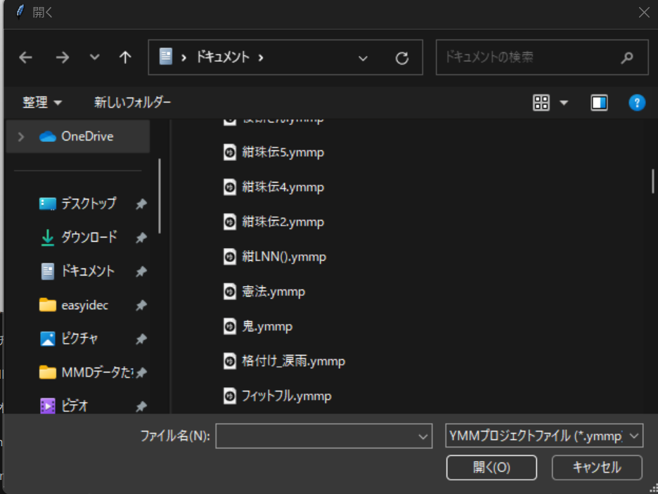
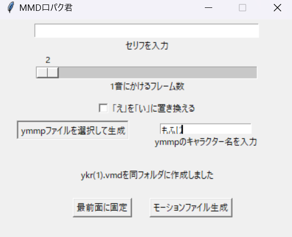
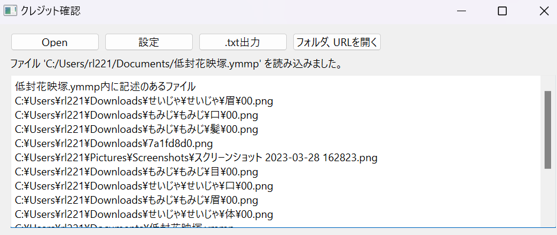
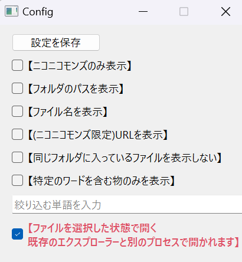
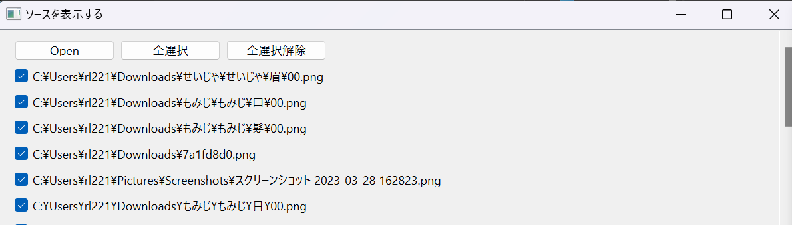
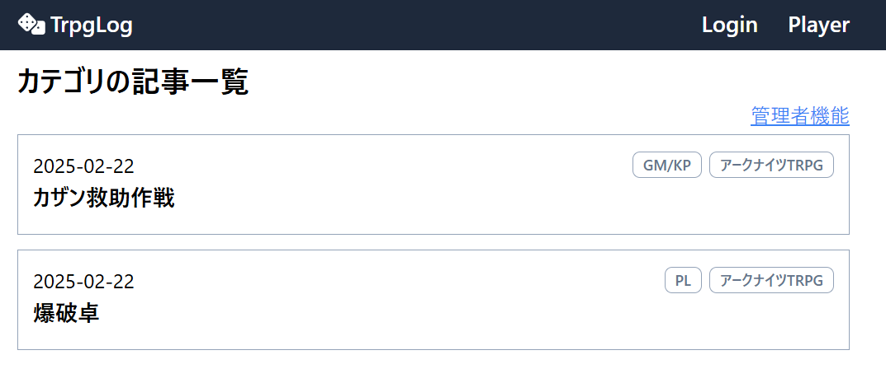
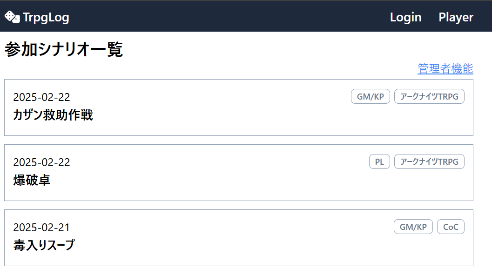

ポートフォリオ
高専三年生
プログラミング言語
- C言語
音楽の拍数計算ツールを作ったことがあり、変数を使った簡単な四則演算程度であれば問題なくできます。
- UNITY(C#)
オブジェクトの移動、時間の測定、キー入力の取得、シーンの管理、UI表示を調べながらであれば出来ます。
参考：高専祭で作成したゲーム(UNITY)
- Arduino
デジタル、アナログのインプット、アウトプットを調べながらであれば出来ます。
- python
授業で学んでおり、現状一番使い慣れている言語です。
四則演算、関数、ファイルへの書き込み、バイナリファイルの作成編集などを調べながらであれば行えます。
参考：
授業で作成した自由課題(python)
pythonで作成中のツール
- html
このポートフォリオを調べながら作成出来る程度です。また、RTA資料のwebサイトも作ったことがあります。
ソフトウェア
- github
VScodeからのアップロードを実行でき、調べながらであればコマンドプロンクトからのアップロードが出来る程度です。
また、高専祭でのゲーム作りにおいては、githubを用いたチーム開発を行いました。
- VScode
私が普段コードを書く際に用いているソフトです。拡張機能のダウンロードやgithubへのアップロードなども行えます。
- Ambient
学校の実験で使用しており、調べながらであればデータのアップロードを行うことが出来ます。
高専祭のゲーム制作
ゲームサイト
ランキングの保存とスプライトは班員による制作、私はランキングの保存以外のプログラミングを担当しました。
スクリプト(github)
「rankingtool」のみ班員によるコードです。
ゲーム制作を通じて、共同制作の難しさやUNITYのシーンについて学ぶことが出来ました。
授業の自由課題
コード(github)
pythonの自由課題で作成したプログラムです。
プログラミングを学ぶゲームのつもりで作ったものですが少し迷走気味になってしまったのが反省点です。
ただ内容としては時間差での文字表示や文字のフォント変更、関数や分岐など実装したい内容はあらかた実装出来たので満足のいく出来にはなりました。
このプログラミング制作を通じて、case文の使い方について学ぶことが出来ました。
ソフトウェアの外部ツール



コード(github、最新版)
3DCGソフトウェア、
MikuMikuDance用のツールを制作中です。
文字列から口パクのモーションファイル(バイナリ)を生成するツールで、現在ヘッダー部分の生成までは完了しています。
現在制作中ですが、バイナリファイルの書き方や読み方、仕組みについて学ぶことが出来ています。
2023/11/18 追記
完成しました。
2024/01/14 追記
冬季課題(3週間程度)にて
YMM4/のファイルからセリフ情報を抜き出してMMDにて口パクのモーションファイルを作るファイルを作成。
choice()の部分を主に追記した他それに伴う関数の整理をしました。
コードと同じリポジトリに実際に使用したYMMファイルとMMDファイルもアップロードしています。



様々なプロジェクトファイルを読み込み参照されているファイルを検索、パスを抽出するソフトを作成しました。
pysideを使用しているためオブジェクト指向で作成しています。このためにオブジェクト指向を学習しました。
作業期間：2/19～2/25 作業時間：約30時間
コードの説明
- main.py
ウィンドウの表示のみです。
表示をmainwindow.pyに書こうとしていましたがそうするとmainwindowにサブウィンドウからアクセス出来なかったためこの形式になりました。
- mainwindow.py
事実上のメインです。
メインウィンドウの設定や様々な処理を行っています。
特にread_text()とoutput()の作成に時間がかかりました。
フォルダのパスの範囲の推定にはスタート位置をC:\\とし終了位置をファイル名に使用できない文字か/x00にしています。
その後、仮にデコード出来ないバイナリが続いていた場合はそれを削除するようにしています。
ファイルを読み込む際、バイナリファイルにも対応出来るようにバイナリで読み込んだ後抽出し、
デコードするという形式を取ったのですがエンコード形式がファイルにより異なるためchardetを使用し対応しました。
output()では別スクリプトが持つ設定に応じて抽出したデータを選別しているのですがこの時リスト内包表記を用いて可読性を高めることに努めました。
- config.py
設定ウィンドウの設定や設定の保存、読み込みを行っています。
変数が一つのため、pickleなどのライブラリを用いず独自のデータファイルを用いています。
具体的には、bool型6つを16進数6桁に変換し、後ろにstr型をエンコードし記述しています。
読み込むときは、先頭の6桁を文字列に変換し読み込んだ後で後ろの部分をデコードしています。
bool型を表す桁数は設定項目と連動しているため、設定項目を増やしたり減らしたりしてもこの部分の変更をしなくても良いようになっています。
また設定を変更した際にmainwidowのoutput()を呼び出し更新を行っているのですが、この時に元リストが崩れないようにdeepcopyを使用しています。
- open.py
抽出したパスやURLを開くウィンドウの設定とその処理を行っています。
設定に応じて選別されたデータを用いてチェックボックスを作成、ボタンが押下された時に選択されているパスやURLをエクスプローラーや規定ブラウザで開いています。
URLかどうかは先頭の文字列が「https://」になっているかで判断しています。
また、ファイルを選択した状態でフォルダを開くにはsubprocessライブラリを使用するのですがこれを使うとエクスプローラーが別プロセスで開いてしまうため、
設定でosライブラリを用いてフォルダを開く物と変更出来るようにしています。
この際、osを用いているとファイルを選択状態に出来ないため、osを用いる設定の時はフォルダのパスとして表示し、同じフォルダの物は1回しか表示されないようにしています。
TrpgLog(githubにジャンプします)
物語のキャラクターになりきってストーリーを体験するTRPGは、その性質上ネタバレを避けることが必須となっている。
しかしそれはそれとして、あったことを記録しておくことで後から他参加者と見返した時に当時のことを追体験出来る。
この二つを両立すべく、タイトルのみを公開し本文を隠すことのできるブログ型ウェブアプリを開発した。
カテゴリで投稿にラベル付けを行い、ラベルごとに絞り込んで表示が出来るようになっている。
公開は
vercelで行った。

